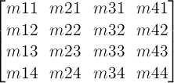
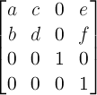
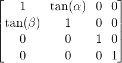
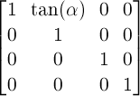

1. Introduction
This section is not normative.
The CSS visual formatting model describes a coordinate system within each element is positioned. Positions and sizes in this coordinate space can be thought of as being expressed in pixels, starting in the origin of point with positive values proceeding to the right and down.
This coordinate space can be modified with the transform property. Using transform, elements can be translated, rotated and scaled.
尽管可以 3D 变换，元素仍然是 2D 的。
2. Module Interactions
This module defines a set of CSS properties that affect the visual rendering of elements to which those properties are applied; these effects are applied after elements have been sized and positioned according to the Visual formatting model from [CSS21]. Some values of these properties result in the creation of a containing block, and/or the creation of a stacking context.
变换在元素尺寸和位置确定之后进行。
Transforms affect the rendering of backgrounds on elements with a value of fixed for the background-attachment property, which is specified in [CSS3BG].
Transforms affect the client rectangles returned by the Element Interface Extensions getClientRects() and getBoundingClientRect(), which are specified in [CSSOM-VIEW].
3. CSS Values
This specification follows the CSS property definition conventions from [CSS21]. Value types not defined in these specifications are defined in CSS Values and Units Module Level 3 [CSS3VAL].
In addition to the property-specific values listed in their definitions, all properties defined in this specification also accept the inherit keyword as their property value. For readability it has not been repeated explicitly.
4. Terminology
When used in this specification, terms have the meanings assigned in this section.
- transformable element
-
A transformable element is an element in one of these categories:
-
an element whose layout is governed by the CSS box model which is either a block-level or atomic inline-level element, or whose display property computes to table-row, table-row-group, table-header-group, table-footer-group, table-cell, or table-caption [CSS21]
-
an element in the SVG namespace and not governed by the CSS box model which has the attributes transform,
patternTransformorgradientTransform[SVG11].
-
- transformed element
-
An element with a computed value other than none for the transform property.
- user coordinate system
- local coordinate system
-
In general, a coordinate system defines locations and distances on the current canvas. The current local coordinate system (also user coordinate system) is the coordinate system that is currently active and which is used to define how coordinates and lengths are located and computed, respectively, on the current canvas. The current user coordinate system has its origin at the top-left of a reference box specified by the transform-box property. Percentage values are relative to the dimension of this reference box. One unit equals one CSS pixel.
- transformation matrix
-
A matrix that defines the mathematical mapping from one coordinate system into another. It is computed from the values of the transform and transform-origin properties as described below.
- current transformation matrix (CTM)
-
A matrix that defines the mapping from the local coordinate system into the viewport coordinate system.
- 2D matrix
-
A 3x2 transformation matrix with 6 items or a 4x4 matrix with 16 items, where the items m31, m32, m13, m23, m43, m14, m24, m34 are equal to 0 and m33, m44 are equal to 1.
- identity transform function
-
A transform function that is equivalent to a identity 4x4 matrix (see Mathematical Description of Transform Functions). Examples for identity transform functions are translate(0), translateX(0), translateY(0), scale(1), scaleX(1), scaleY(1), rotate(0), skew(0, 0), skewX(0), skewY(0) and matrix(1, 0, 0, 1, 0, 0).
5. The Transform Rendering Model
This section is normative.
Specifying a value other than none for the transform property establishes a new local coordinate system at the element that it is applied to. The mapping from where the element would have rendered into that local coordinate system is given by the element’s transformation matrix. Transformations are cumulative. That is, elements establish their local coordinate system within the coordinate system of their parent. From the perspective of the user, an element effectively accumulates all the transform properties of its ancestors as well as any local transform applied to it. The accumulation of these transforms defines a current transformation matrix for the element.
transformed element 为自己创建一个本地坐标系统。
The coordinate space is a coordinate system with two axes: the X axis increases horizontally to the right; the Y axis increases vertically downwards.
The transformation matrix is computed from the transform and transform-origin properties as follows:
-
Start with the identity matrix.
-
Translate by the computed X and Y of transform-origin
-
Multiply by each of the transform functions in transform property from left to right
-
Translate by the negated computed X and Y values of transform-origin
Transforms apply to transformable elements.
Note: Transformations do affect the visual rendering, but have no affect on the CSS layout other than affecting overflow. Transforms are also taken into account when computing client rectangles exposed via the Element Interface Extensions, namely getClientRects() and getBoundingClientRect(), which are specified in [CSSOM-VIEW].
transform 不会影响布局，但是会影响 overflow, 也会影响 getClientRects(), getBoundingClientRect()。
div {
transform: translate(100px, 100px);
}
This transform moves the element by 100 pixels in both the X and Y directions.

div {
height: 100px; width: 100px;
transform-origin: 50px 50px;
transform: rotate(45deg);
}
The transform-origin property moves the point of origin by 50 pixels in both the X and Y directions. The transform rotates the element clockwise by 45° about the point of origin. After all transform functions were applied, the translation of the origin gets translated back by -50 pixels in both the X and Y directions.
div {
height: 100px; width: 100px;
transform: translate(80px, 80px) scale(1.5, 1.5) rotate(45deg);
}
This transform moves the element by 80 pixels in both the X and Y directions, then scales the element by 150%, then rotates it 45° clockwise about the Z axis. Note that the scale and rotation operate about the center of the element, since the element has the default transform-origin of 50% 50%.
Note that an identical rendering can be obtained by nesting elements with the equivalent transforms:
<div style="transform: translate(80px, 80px)">
<div style="transform: scale(1.5, 1.5)">
<div style="transform: rotate(45deg)"></div>
</div>
transformed element 不会影响其它元素的布局，不过会影响 overflow area，即可能导致出现滚动条。
transformed element 生成新的 stacking context 和 containing block。
若元素使用了 transform 或者它的后代使用了 transform，它的 background-attachment: fixed 按 background-attachment: scroll 对待，计算值不变。
</div>
For elements whose layout is governed by the CSS box model, the transform property does not affect the flow of the content surrounding the transformed element. However, the extent of the overflow area takes into account transformed elements. This behavior is similar to what happens when elements are offset via relative positioning. Therefore, if the value of the overflow property is scroll or auto, scrollbars will appear as needed to see content that is transformed outside the visible area.
For elements whose layout is governed by the CSS box model, any value other than none for the transform results in the creation of a stacking context. Implementations must paint the layer it creates, within its parent stacking context, at the same stacking order that would be used if it were a positioned element with ‘z-index: 0’. If an element with a transform is positioned, the ‘z-index’ property applies as described in [CSS21], except that ‘auto’ is treated as ‘0’ since a new stacking context is always created
For elements whose layout is governed by the CSS box model, any value other than none for the transform also causes the element to become a containing block, and the object acts as a containing block for fixed positioned descendants.
Is this effect on position: fixed necessary? If so, need to go into more detail here about why fixed positioned objects should do this, i.e., that it’s much harder to implement otherwise. See Bug 16328.
Fixed backgrounds on the root element are affected by any transform specified for that element. For all other elements that are effected by a transform (i.e. have a transform applied to them, or to any of their ancestor elements), a value of fixed for the background-attachment property is treated as if it had a value of scroll. The computed value of background-attachment is not affected.
Note: If the root element is transformed, the transformation applies to the entire canvas, including any background specified for the root element. Since the background painting area for the root element is the entire canvas, which is infinite, the transformation might cause parts of the background that were originally off-screen to appear. For example, if the root element’s background were repeating dots, and a transformation of scale(0.5) were specified on the root element, the dots would shrink to half their size, but there will be twice as many, so they still cover the whole viewport.
6. The transform Property
A transformation is applied to the coordinate system an element renders in through the transform property. This property contains a list of transform functions. The final transformation value for a coordinate system is obtained by converting each function in the list to its corresponding matrix like defined in Mathematical Description of Transform Functions, then multiplying the matrices.
| Name: | transform |
|---|---|
| Value: | none | <transform-list> |
| Initial: | none |
| Applies to: | transformable elements |
| Inherited: | no |
| Percentages: | refer to the size of reference box |
| Media: | visual |
| Computed value: | As specified, but with relative lengths converted into absolute lengths. |
| Canonical order: | per grammar |
| Animatable: | as transform |
Any computed value other than none for the transform affects containing block and stacking context, as described in §5 The Transform Rendering Model.
<transform-list> = <transform-function>+
6.1. Serialization of <transform-function>s
To serialize the <transform-function>s, serialize as per their individual grammars, in the order the grammars are written in, avoiding <calc()> expressions where possible, avoiding <calc()> transformations, omitting components when possible without changing the meaning, joining space-separated tokens with a single space, and following each serialized comma with a single space.
6.2. Serialization of the computed value of <transform-list>
A <transform-list> for the computed value is serialized to one matrix() function by the following algorithm:
keep 4x4 matrix here and below?
-
Let transform be a 4x4 matrix initialized to the identity matrix. The elements m11, m22, m33 and m44 of transform must be set to 1 all other elements of transform must be set to 0.
-
Post-multiply all <transform-function>s in <transform-list> to transform.
-
Chose between matrix() or <matrix3d()> serialization:
- If transform is a 2D matrix
- Serialize transform to a matrix() function.
- Otherwise
- Serialize transform to a <matrix3d()> function.
7. The transform-origin Property
| Name: | transform-origin |
|---|---|
| Value: | [ left | center | right | top | bottom | <length-percentage> ] | [ left | center | right | <length-percentage> ] [ top | center | bottom | <length-percentage> ] <length>? | [[ center | left | right ] && [ center | top | bottom ]] <length>? |
| Initial: | 50% 50% |
| Applies to: | transformable elements |
| Inherited: | no |
| Percentages: | refer to the size of reference box |
| Media: | visual |
| Computed value: | For <length> the absolute value, otherwise a percentage |
| Canonical order: | per grammar |
| Animatable: | as simple list of length, percentage, or calc |
The initial used value for SVG elements without associated CSS layout box is 0 0.
The values of the transform and transform-origin properties are used to compute the transformation matrix, as described above.
If only one value is specified, the second value is assumed to be center. If one or two values are specified, the third value is assumed to be 0px.
若只指定了一个值，第二个值是 center。若没有指定三个值，第三个值是 0px。
If two or more values are defined and either no value is a keyword, or the only used keyword is center, then the first value represents the horizontal position (or offset) and the second represents the vertical position (or offset). A third value always represents the Z position (or offset) and must be of type <length>.
- <percentage>
-
A percentage for the horizontal offset is relative to the width of the reference box. A percentage for the vertical offset is relative to the height of the reference box. The value for the horizontal and vertical offset represent an offset from the top left corner of the reference box.
- <length>
-
A length value gives a fixed length as the offset. The value for the horizontal and vertical offset represent an offset from the top left corner of the reference box.
- top
-
Computes to 0% for the vertical position.
- right
-
Computes to 100% for the horizontal position.
- bottom
-
Computes to 100% for the vertical position.
- left
-
Computes to 0% for the horizontal position.
- center
-
Computes to 50% (left 50%) for the horizontal position if the horizontal position is not otherwise specified, or 50% (top 50%) for the vertical position if it is.
The transform-origin property is a resolved value special case property like height. [CSSOM]
8. Transform reference box: the transform-box property
| Name: | transform-box |
|---|---|
| Value: | border-box | fill-box | view-box |
| Initial: | border-box |
| Applies to: | transformable elements |
| Inherited: | no |
| Percentages: | N/A |
| Media: | visual |
| Computed value: | Same as specified value. |
| Canonical order: | per grammar |
| Animatable: | no |
指定 reference box。目前只有 Firefox 实现。
All transformations defined by the transform and transform-origin property are relative to the position and dimensions of the reference box of the element. The reference box is specified by one of the following:
- border-box
-
Uses the border box as reference box. The reference box of a table is the border box of its table wrapper box, not its table box.
- fill-box
-
Uses the object bounding box as reference box.
- view-box
-
Uses the nearest SVG viewport as reference box.
If a
viewBoxattribute is specified for the SVG viewport creating element:
A reference box adds an additional offset to the origin specified by the transform-origin property.
For SVG elements without an associated CSS layout box, the used value for border-box is view-box.
For elements with an associated CSS layout box, the used value for fill-box and view-box is border-box.
9. The SVG transform Attribute
The SVG 1.1 specification did not specify the attributes "transform", gradientTransform or patternTransform as presentation attributes [SVG11]. In order to improve the integration of SVG and HTML, this specification makes these SVG attributes presentation attributes and makes the transform property one that applies to transformable elements in the SVG namespace.
This specification will also introduce the new presentation attribute transform-origin. Values on this presentation attribute get parsed following the syntax rules on SVG Data Types [SVG11].
9.1. SVG transform attribute specificity
Since the previously named SVG attributes become presentation attributes, their participation in the CSS cascade is determined by the specificity of presentation attributes in the SVG specification.
This example shows the combination of the transform style property and the transform presentation attribute.
<svg xmlns="http://www.w3.org/2000/svg">
<style>
.container {
transform: translate(100px, 100px);
}
</style>
<g class="container" transform="translate(200 200)">
<rect width="100" height="100" fill="blue" />
</g>
</svg>
Because of the participation to the CSS cascade, the transform style property overrides the transform presentation attribute. Therefore the container gets translated by 100px in both the horizontal and the vertical directions, instead of 200px.
transform attribute 参与 CSS cascade，被 transform style 覆盖。
9.2. Syntax of the SVG transform attribute
To provide backwards compatibility, the syntax of the transform presentation attribute differs from the syntax of the transform style property as shown in the example above. However, the syntax used for the transform style property can be used for a transform presentation attribute value. Authors are advised to follow the rules of CSS Values and Units Module [CSS3VAL]. Therefore an author should write ''transform="translate(200px, 200px)" instead of transform="translate (200 200)" because the second example with the spaces before the ('', the missing comma between the arguments and the values without the explicit unit notation would be valid for the attribute only.
为了兼容已有的 SVG，transform attribute 和 transform style 的语法不一样。不过 transform attribute 的值可以使用 transform style 语法，这是推荐做法。
9.2.1. Transform List
The value for the transform attribute consists of a transform list with zero or more transform functions using functional notation. If the transform list consists of more than one transform function, these functions are separated by optional whitespace, an optional comma (,) and optional whitespace. The transform list can have optional whitespace characters before and after the list.
9.2.2. Functional Notation
The syntax starts with the name of the function followed by a left parenthesis followed by optional whitespace followed by the argument(s) to the notation followed by optional whitespace followed by a right parenthesis. If a function takes more than one argument, the arguments are either separated by a comma (,) with optional whitespace characters before and after the comma, or by one or more whitespace characters.
Note: Unlike SVG 1.1, this specification does not allow optional whitespace between the name of the function and the left parenthesis.
9.2.3. SVG Data Types
Arguments on all new introduced presentation attributes consist of data types in the sense of CSS Values and Units Module [CSS3VAL]. The definitions of data types in CSS Values and Units Module are enhanced as follows:
9.2.3.1. The <length> type
A <length> can be a <number> without an unit identifier. In this case the number gets interpreted as "user unit". A user unit in the the initial coordinate system is equivalent to the parent environment’s notion of a pixel unit.
9.2.3.2. The <angle> type
An angle can be a <number> without an unit identifier. In this case the number gets interpreted as a value in degrees.
9.2.3.3. The <number> type
SVG supports scientific notations for numbers. Therefore a number gets parsed like described in SVG Basic data types for SVG attributes.
9.3. The SVG gradientTransform and patternTransform attributes
SVG specifies the attributes gradientTransform and patternTransform. This specification makes both attributes presentation attributes. Both attributes use the same syntax as the SVG transform attribute. This specification does not introduce corresponding CSS style properties. Both, the gradientTransform and the patternTransform attribute, are presentation attributes for the transform property.
9.4. SVG transform functions
For backwards compatibility with existing SVG content, this specification supports all transform functions defined by The ‘transform’ attribute in [SVG11]. Therefore the two-dimensional transform function rotate(<angle>) is extended as follows:
-
rotate() = rotate( <angle> [, <length>, <length>]? )
- specifies a 2D rotation by the angle specified in the parameter about the origin of the element, as defined by the transform-origin property. If the optional translation values are specified, the transform origin is translated by that amount (using the current transformation matrix) for the duration of the rotate operation. For example rotate(90deg, 100px, 100px) would cause elements to appear rotated one-quarter of a turn in the clockwise direction after a translation of the transform-origin of 100 pixel in the horizontal and vertical directions.
User agents are just required to support the two optional arguments for translation on elements in the SVG namespace.
9.5. User coordinate space
For the pattern, linearGradient, radialGradient and clipPath elements the transform, patternTransform, gradientTransform presentation attributes represents values in the current user coordinate system in place at the time when these elements are referenced (i.e., the user coordinate system for the element referencing the pattern element via a fill or stroke property). Percentage values are relative to the reference box of the referencing element.
In particular the patternUnits, gradientUnits and maskUnits attributes don’t affect the user coordinate system used for transformations [SVG11].
For all other transformable elements the transform presentation attribute represents values in the current user coordinate system of the parent. All percentage values of the transform presentation attribute are relative to the element’s reference box.
The transform-origin property on the pattern in the following example specifies a 50% translation of the origin in the horizontal and vertical dimension. The transform property specifies a translation as well, but in absolute lengths.
<svg xmlns="http://www.w3.org/2000/svg">
<style>
pattern {
transform: rotate(45deg);
transform-origin: 50% 50%;
}
</style>
<defs>
<pattern id="pattern-1">
<rect id="rect1" width="100" height="100" fill="blue" />
</pattern>
</defs>
<rect width="200" height="200" fill="url(#pattern-1)" />
</svg>
An SVG pattern element doesn’t have a bounding box. The reference box of the referencing rect element is used instead to solve the relative values of the transform-origin property. Therefore the point of origin will get translated by 100 pixels temporarily to rotate the user space of the pattern elements content.
9.6. SVG DOM interface for the transform attribute
The SVG specification defines the "SVGAnimatedTransformList" interface in the SVG DOM to provide access to the animated and the base value of the SVG transform, gradientTransform and patternTransform attributes. To ensure backwards compatibility, this API must still be supported by user agents.
The transform property contributes to the CSS cascade. According to SVG 1.1 user agents conceptually insert a new author style sheet for presentation attributes, which is the first in the author style sheet collection. baseVal gives the author the possibility to access and modify the values of the SVG transform attribute. To provide the necessary backwards compatibility to the SVG DOM, baseVal must reflect the values of this author style sheet. All modifications to SVG DOM objects of baseVal must affect this author style sheet immediately.
animVal represents the computed style of the transform property. Therefore it includes all applied CSS3 Transitions, CSS3 Animations or SVG Animations if any of those are underway. The computed style and SVG DOM objects of animVal can not be modified.
The attribute "type" of 'SVGTransform" must return "SVG_TRANSFORM_UNKNOWN" for Transform Functions or unit types that are not supported by this interface. If a two-dimensional transform function is not supported, the attribute "matrix" must return a 3x2 "SVGMatrix" with the corresponding values as described in the section Mathematical Description of Transform Functions.
10. SVG Animation
10.1. The animate and set element
With this specification, the animate element and the set element can animate the data type <transform-list>.
The animation effect is post-multiplied to the underlying value for additive animate animations (see below) instead of added to the underlying value, due to the specific behavior of <transform-list> animations.
From-to, from-by and by animations are defined in SMIL to be equivalent to a corresponding values animation. However, to animations are a mixture of additive and non-additive behavior [SMIL3].
To animations on animate provide specific functionality to get a smooth change from the underlying value to the to attribute value, which conflicts mathematically with the requirement for additive transform animations to be post-multiplied. As a consequence, the behavior of to animations for animate is undefined. Authors are suggested to use from-to, from-by, by or values animations to achieve any desired transform animation.
The value "paced" is undefined for the attribute calcMode on animate for animations of the data type <transform-list>. If specified, UAs may choose the value "linear" instead. Future versions of this specification may define how paced animations can be performed on <transform-list>.
Note: The following paragraphs extend Elements, attributes and properties that can be animated [SVG11].
The introduce presentation attributes transform and transform-origin are animatable.
With this specification the SVG basic data type <transform-list> is equivalent to a list of <transform-function>s. <transform-list> is animatable and additive. The data type can be animated using the SVG animate element and the SVG set element. SVG animations must run the same animation steps as described in section Transitions and Animations between Transform Values.
| Data type | Additive? | animate
| set
| animateColor
| animateTransform
| Notes |
|---|---|---|---|---|---|---|
| <transform-list> | yes | yes | yes | no | yes | Additive for animateTransform means that a transformation is post-multiplied to the base set of
transformations.
|
10.2. Neutral element for addition
Some animations require a neutral element for addition. For transform functions this is a scalar or a list of scalars of 0. Examples of neutral elements for transform functions are translate(0), translateX(0), translateY(0), scale(0), scaleX(0), scaleY(0), rotate(0), skew(0, 0), skewX(0), skewY(0) and matrix(0, 0, 0, 0, 0, 0).
Note: Animations to or from the neutral element of additions matrix() fall back to discrete animations (See §16 Interpolation of Matrices).
A by animation with a by value vb is equivalent to the same animation with a values list with 2 values, the neutral element for addition for the domain of the target attribute (denoted 0) and vb, and ''additive="sum"''. [SMIL3]
<rect width="100" height="100"> <animateTransform attributeName="transform" attributeType="XML" type="scale" by="1" dur="5s" fill="freeze"/> </rect>
The neutral element for addition when performing a by animation with ''type="scale" is the value 0. Thus, performing the animation of the example above causes the rectangle to be invisible at time 0s (since the animated transform list value is scale(0)), and be scaled back to its original size at time 5s (since the animated transform list value is scale(1)'').
10.3. The SVG 'attributeName' attribute
SVG 1.1 Animation defines the "attributeName" attribute to specify the name of the target attribute. For the presentation attributes gradientTransform and patternTransform it will also be possible to use the value transform. The same transform property will get animated.
In this example the gradient transformation of the linear gradient gets animated.
<linearGradient gradientTransform="scale(2)"><animate attributeName="gradientTransform" from="scale(2)" to="scale(4)" dur="3s" additive="sum"/> <animate attributeName="transform" from="translate(0, 0)" to="translate(100px, 100px)" dur="3s" additive="sum"/> </linearGradient>
The linearGradient element specifies the gradientTransform presentation attribute. The two animate elements address the target attribute gradientTransform and transform. Even so all animations apply to the same gradient transformation by taking the value of the gradientTransform presentation attribute, applying the scaling of the first animation and applying the translation of the second animation one after the other.
11. The Transform Functions
The value of the transform property is a list of <transform-function>. The set of allowed transform functions is given below. In the following functions, a <zero> behaves the same as 0deg ("unitless 0" angles are preserved for legacy compat). A percentage for horizontal translations is relative to the width of the reference box. A percentage for vertical translations is relative to the height of the reference box.
11.1. 2D Transform Functions
- matrix() = matrix( <number> [, <number> ]{5,5} )
-
specifies a 2D transformation in the form of a transformation matrix of the six values a-f.
- translate() = translate( <length-percentage> [, <length-percentage> ]? )
-
specifies a 2D translation by the vector [tx, ty], where tx is the first translation-value parameter and ty is the optional second translation-value parameter. If <ty> is not provided, ty has zero as a value.
- translateX() = translateX( <length-percentage> )
-
specifies a translation by the given amount in the X direction.
- translateY() = translateY( <length-percentage> )
-
specifies a translation by the given amount in the Y direction.
- scale() = scale( <number> [, <number> ]? )
-
specifies a 2D scale operation by the [sx,sy] scaling vector described by the 2 parameters. If the second parameter is not provided, it takes a value equal to the first. For example, scale(1, 1) would leave an element unchanged, while scale(2, 2) would cause it to appear twice as long in both the X and Y axes, or four times its typical geometric size.
- scaleX() = scaleX( <number> )
-
specifies a 2D scale operation using the [sx,1] scaling vector, where sx is given as the parameter.
- scaleY() = scaleY( <number> )
-
specifies a 2D scale operation using the [1,sy] scaling vector, where sy is given as the parameter.
- rotate() = rotate( [ <angle> | <zero> ] )
-
specifies a 2D rotation by the angle specified in the parameter about the origin of the element, as defined by the transform-origin property. For example, rotate(90deg) would cause elements to appear rotated one-quarter of a turn in the clockwise direction.
- skew() = skew( [ <angle> | <zero> ] [, [ <angle> | <zero> ] ]? )
-
specifies a 2D skew by [ax,ay] for X and Y. If the second parameter is not provided, it has a zero value.
skew() exists for compatibility reasons, and should not be used in new content. Use skewX() or skewY() instead, noting that the behavior of skew() is different from multiplying skewX() with skewY().
- skewX() = skewX( [ <angle> | <zero> ] )
-
specifies a 2D skew transformation along the X axis by the given angle.
- skewY() = skewY( [ <angle> | <zero> ] )
-
specifies a 2D skew transformation along the Y axis by the given angle.
12. The Transform Function Lists
If a list of <transform-function> is provided, then the net effect is as if each transform function had been specified separately in the order provided. For example,
<div style="transform:translate(-10px,-20px) scale(2) rotate(45deg) translate(5px,10px)"/>
is functionally equivalent to:
<div style="transform:translate(-10px,-20px)">
<div style="transform:scale(2)">
<div style="transform:rotate(45deg)">
<div style="transform:translate(5px,10px)">
</div>
</div>
</div>
</div>
That is, in the absence of other styling that affects position and dimensions, a nested set of transforms is equivalent to a single list of transform functions, applied from the outside in. The resulting transform is the matrix multiplication of the list of transforms.
多个单独 transform 嵌套叠加的效果等效于一个 transform 函数列表。
If a transform function causes the current transformation matrix of an object to be non-invertible, the object and its content do not get displayed.
如果 transform 函数导致 CTM 不可逆，元素及其内容不会显示。
The object in the following example gets scaled by 0.
<style>
.box {
transform: scale(0);
}
</style>
<div class="box">
Not visible
</div>
The scaling causes a non-invertible CTM for the coordinate space of the div box. Therefore neither the div box, nor the text in it get displayed.
13. Interpolation of Transforms
When animating or transitioning transforms, the transform function lists must be interpolated. For interpolation between one transform from-transform and a second transforms to-transform, the rules described below are applied.
-
If both the from- and to-transform are none:
-
There is no interpolation necessary. The computed value stays none.
-
-
If one of the from- or to-transforms is none.
-
The value none is replaced by an equivalent identity transform function list for the corresponding transform function list. Both transform function lists get interpolated following the next rule.
For example, if from-transform is scale(2) and to-transform is none then the value scale(1) will be used for to-transform and animation will proceed using the next rule. Similarly, if from-transform is none and to-transform is scale(2) rotate(50deg) then the animation will execute as if from-transform is scale(1) rotate(0). -
-
If from- and to-transform have the same number of transform functions, each transform function pair has either the same name, or is a derivative of the same primitive.
-
Interpolate each transform function pair as described in Interpolation of transform functions. The computed value is the resulting transform function list.
-
-
In all other cases:
-
The transform functions of each transform function list on the from- and to-transform get post multiplied and converted into 4x4 matrices. Each of the matrices gets interpolated following the instructions in Interpolation of matrices. The computed value is the transform function matrix if both initial matrices can be represented by a correlating 3x2 matrix and matrix3d otherwise.
-
In some cases, an animation might cause a transformation matrix to be singular or non-invertible. For example, an animation in which scale moves from 1 to -1. At the time when the matrix is in such a state, the transformed element is not rendered.
14. Transform function primitives and derivatives
Some transform functions can be represented by more generic transform functions. These transform functions are called derived transform functions, the generic transform functions primitives. Primitives for two-dimensional and three-dimensional transform functions are listed below.
Two-dimensional primitives with derived transform functions are:
- translate()
- for translateX(), translateY() and translate().
- rotate() with three arguments
- for rotate() with one or three arguments if rotate with three arguments is supported.
- scale()
- for scaleX(), scaleY() and scale().
Three-dimensional primitives with derived transform functions are:
- translate3d()
- for translateX(), translateY(), translateZ() and translate().
- scale3d()
- for scaleX(), scaleY(), scaleZ() and scale().
- rotate3d()
- for rotate(), rotateX(), rotateY() and rotateZ().
For derived transform functions that have a two-dimensional primitive and a three-dimensional primitive, the context decides about the used primitive. See Interpolation of primitives and derived transform functions.
15. Interpolation of primitives and derived transform functions
Two transform functions with the same name and the same number of arguments are interpolated numerically without a former conversion. The calculated value will be of the same transform function type with the same number of arguments. Special rules apply to matrix().
The two transform functions translate(0) and translate(100px) are of the same type, have the same number of arguments and therefore can get interpolated numerically. translateX(100px) is not of the same type and translate(100px, 0) does not have the same number of arguments, therefore these transform functions can not get interpolated without a former conversion step.
Two different types of transform functions that share the same primitive, or transform functions of the same type with different number of arguments can be interpolated. Both transform functions need a former conversion to the common primitive first and get interpolated numerically afterwards. The computed value will be the primitive with the resulting interpolated arguments.
The following example describes a transition from translateX(100px) to translateY(100px) in 3 seconds on hovering over the div box. Both transform functions derive from the same primitive translate() and therefore can be interpolated.
div {
transform: translateX(100px);
}
div:hover {
transform: translateY(100px);
transition: transform 3s;
}
For the time of the transition both transform functions get transformed to the common primitive. translateX(100px) gets converted to translate(100px, 0) and translateY(100px) gets converted to translate(0, 100px). Both transform functions can then get interpolated numerically.
If both transform functions share a primitive in the two-dimensional space, both transform functions get converted to the two-dimensional primitive. If one or both transform functions are three-dimensional transform functions, the common three-dimensional primitive is used.
In this example a two-dimensional transform function gets animated to a three-dimensional transform function. The common primitive is translate3d().
div {
transform: translateX(100px);
}
div:hover {
transform: translateZ(100px);
transition: transform 3s;
}
First translateX(100px) gets converted to translate3d(100px, 0, 0) and translateZ(100px) to translate3d(0, 0, 100px) respectively. Then both converted transform functions get interpolated numerically.
16. Interpolation of Matrices
When interpolating between two matrices, each matrix is decomposed into the corresponding translation, rotation, scale, skew. Each corresponding component of the decomposed matrices gets interpolated numerically and recomposed back to a matrix in a final step.
In the following example the element gets translated by 100 pixel in both the X and Y directions and rotated by 1170° on hovering. The initial transformation is 45°. With the usage of transition, an author might expect a animated, clockwise rotation by three and a quarter turns (1170°).
<style>
div {
transform: rotate(45deg);
}
div:hover {
transform: translate(100px, 100px) rotate(1215deg);
transition: transform 3s;
}
</style>
<div></div>
The number of transform functions on the source transform rotate(45deg) differs from the number of transform functions on the destination transform translate(100px, 100px) rotate(1125deg). According to the last rule of Interpolation of Transforms, both transforms must be interpolated by matrix interpolation. With converting the transformation functions to matrices, the information about the three turns gets lost and the element gets rotated by just a quarter turn (90°).
To achieve the three and a quarter turns for the example above, source and destination transforms must fulfill the third rule of Interpolation of Transforms. Source transform could look like translate(0, 0) rotate(45deg) for a linear interpolation of the transform functions.
In the following we differ between the interpolation of two 2D matrices and the interpolation of two matrices where at least one matrix is not a 2D matrix.
If one of the matrices for interpolation is non-invertible, the used animation function must fall-back to a discrete animation according to the rules of the respective animation specification.
16.1. Supporting functions
The pseudo code in the next subsections make use of the following supporting functions:
Supporting functions (point is a 3 component vector, matrix is a 4x4 matrix, vector is a 4 component vector):
double determinant(matrix) returns the 4x4 determinant of the matrix
matrix inverse(matrix) returns the inverse of the passed matrix
matrix transpose(matrix) returns the transpose of the passed matrix
point multVecMatrix(point, matrix) multiplies the passed point by the passed matrix
and returns the transformed point
double length(point) returns the length of the passed vector
point normalize(point) normalizes the length of the passed point to 1
double dot(point, point) returns the dot product of the passed points
double sqrt(double) returns the root square of passed value
double max(double y, double x) returns the bigger value of the two passed values
double dot(vector, vector) returns the dot product of the passed vectors
vector multVector(vector, vector) multiplies the passed vectors
double sqrt(double) returns the root square of passed value
double max(double y, double x) returns the bigger value of the two passed values
double min(double y, double x) returns the smaller value of the two passed values
double cos(double) returns the cosines of passed value
double sin(double) returns the sine of passed value
double acos(double) returns the inverse cosine of passed value
double abs(double) returns the absolute value of the passed value
double rad2deg(double) transforms a value in radian to degree and returns it
double deg2rad(double) transforms a value in degree to radian and returns it
Decomposition also makes use of the following function:
point combine(point a, point b, double ascl, double bscl)
result[0] = (ascl * a[0]) + (bscl * b[0])
result[1] = (ascl * a[1]) + (bscl * b[1])
result[2] = (ascl * a[2]) + (bscl * b[2])
return result
16.2. Interpolation of 2D matrices
16.2.1. Decomposing a 2D matrix
The pseudo code below is based upon the "unmatrix" method in "Graphics Gems II, edited by Jim Arvo".
Input: matrix ; a 4x4 matrix
Output: translation ; a 2 component vector
scale ; a 2 component vector
angle ; rotation
m11 ; 1,1 coordinate of 2x2 matrix
m12 ; 1,2 coordinate of 2x2 matrix
m21 ; 2,1 coordinate of 2x2 matrix
m22 ; 2,2 coordinate of 2x2 matrix
Returns false if the matrix cannot be decomposed, true if it can
double row0x = matrix[0][0]
double row0y = matrix[0][1]
double row1x = matrix[1][0]
double row1y = matrix[1][1]
translate[0] = matrix[3][0]
translate[1] = matrix[3][1]
scale[0] = sqrt(row0x * row0x + row0y * row0y)
scale[1] = sqrt(row1x * row1x + row1y * row1y)
// If determinant is negative, one axis was flipped.
double determinant = row0x * row1y - row0y * row1x
if (determinant < 0)
// Flip axis with minimum unit vector dot product.
if (row0x < row1y)
scale[0] = -scale[0]
else
scale[1] = -scale[1]
// Renormalize matrix to remove scale.
if (scale[0])
row0x *= 1 / scale[0]
row0y *= 1 / scale[0]
if (scale[1])
row1x *= 1 / scale[1]
row1y *= 1 / scale[1]
// Compute rotation and renormalize matrix.
angle = atan2(row0y, row0x);
if (angle)
// Rotate(-angle) = [cos(angle), sin(angle), -sin(angle), cos(angle)]
// = [row0x, -row0y, row0y, row0x]
// Thanks to the normalization above.
double sn = -row0y
double cs = row0x
double m11 = row0x
double m12 = row0y
double m21 = row1x
double m22 = row1y
row0x = cs * m11 + sn * m21
row0y = cs * m12 + sn * m22
row1x = -sn * m11 + cs * m21
row1y = -sn * m12 + cs * m22
m11 = row0x
m12 = row0y
m21 = row1x
m22 = row1y
// Convert into degrees because our rotation functions expect it.
angle = rad2deg(angle)
return true
16.2.2. Interpolation of decomposed 2D matrix values
Before two decomposed 2D matrix values can be interpolated, the following
Input: translationA ; a 2 component vector
scaleA ; a 2 component vector
angleA ; rotation
m11A ; 1,1 coordinate of 2x2 matrix
m12A ; 1,2 coordinate of 2x2 matrix
m21A ; 2,1 coordinate of 2x2 matrix
m22A ; 2,2 coordinate of 2x2 matrix
translationB ; a 2 component vector
scaleB ; a 2 component vector
angleB ; rotation
m11B ; 1,1 coordinate of 2x2 matrix
m12B ; 1,2 coordinate of 2x2 matrix
m21B ; 2,1 coordinate of 2x2 matrix
m22B ; 2,2 coordinate of 2x2 matrix
// If x-axis of one is flipped, and y-axis of the other,
// convert to an unflipped rotation.
if ((scaleA[0] < 0 && scaleB[1] < 0) || (scaleA[1] < 0 && scaleB[0] < 0))
scaleA[0] = -scaleA[0]
scaleA[1] = -scaleA[1]
angleA += angleA < 0 ? 180 : -180
// Don’t rotate the long way around.
if (!angleA)
angleA = 360
if (!angleB)
angleB = 360
if (abs(angleA - angleB) > 180)
if (angleA > angleB)
angleA -= 360
else
angleB -= 360
Afterwards, each component of the decomposed values translation, scale, angle, m11 to m22 of the source matrix get linearly interpolated with each corresponding component of the destination matrix.
16.2.3. Recomposing to a 2D matrix
After interpolation, the resulting values are used to transform the elements user space. One way to use these values is to recompose them into a 4x4 matrix. This can be done following the pseudo code below:
Input: translation ; a 2 component vector
scale ; a 2 component vector
angle ; rotation
m11 ; 1,1 coordinate of 2x2 matrix
m12 ; 1,2 coordinate of 2x2 matrix
m21 ; 2,1 coordinate of 2x2 matrix
m22 ; 2,2 coordinate of 2x2 matrix
Output: matrix ; a 4x4 matrix initialized to identity matrix
matrix[0][0] = m11
matrix[0][1] = m12
matrix[1][0] = m21
matrix[1][1] = m22
// Translate matrix.
matrix[3][0] = translate[0] * m11 + translate[1] * m21
matrix[3][1] = translate[0] * m12 + translate[1] * m22
// Rotate matrix.
angle = deg2rad(angle);
double cosAngle = cos(angle);
double sinAngle = sin(angle);
// New temporary, identity initialized, 4x4 matrix rotateMatrix
rotateMatrix[0][0] = cosAngle
rotateMatrix[0][1] = sinAngle
rotateMatrix[1][0] = -sinAngle
rotateMatrix[1][1] = cosAngle
matrix = multiply(matrix, rotateMatrix)
// Scale matrix.
matrix[0][0] *= scale[0]
matrix[0][1] *= scale[0]
matrix[1][0] *= scale[1]
matrix[1][1] *= scale[1]
17. Mathematical Description of Transform Functions
Mathematically, all transform functions can be represented as 4x4 transformation matrices of the following form:

One translation unit on a matrix is equivalent to 1 pixel in the local coordinate system of the element.
-
A 2D 3x2 matrix with six parameters a, b, c, d, e and f is equivalent to the matrix:

-
A 2D translation with the parameters tx and ty is equivalent to a 3D translation where tz has zero as a value.
-
A 2D scaling with the parameters sx and sy is equivalent to a 3D scale where sz has one as a value.
-
A 2D rotation with the parameter alpha is equivalent to a 3D rotation with vector [0,0,1] and parameter alpha.
-
A 2D skew like transformation with the parameters alpha and beta is equivalent to the matrix:

-
A 2D skew transformation along the X axis with the parameter alpha is equivalent to the matrix:

-
A 2D skew transformation along the Y axis with the parameter beta is equivalent to the matrix:

Changes since last publication
Acknowledgments
The editors would like to thank Robert O’Callahan, Cameron McCormack, Tab Atkins, Gérard Talbot, L. David Baron, Rik Cabanier, Brian Birtles, Benoit Jacob, Ken Shoemake, Alan Gresley, Maciej Stochowiak, Sylvain Galineau, Rafal Pietrak, Shane Stephens, Matt Rakow, XiangHongAi, Fabio M. Costa, Nivesh Rajbhandari, Rebecca Hauck, Gregg Tavares, Graham Clift, Erik Dahlström, Alexander Zolotov and Boris Zbarsky for their careful reviews, comments, and corrections.